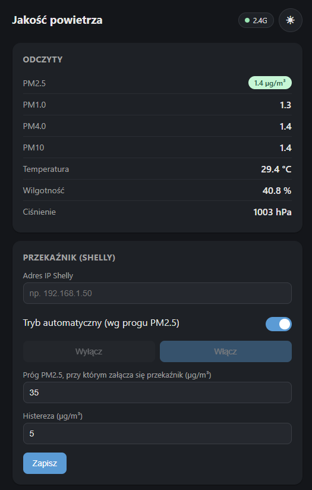
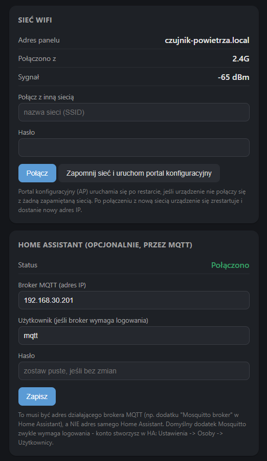

Domowy czujnik jakości powietrza: PM1/2.5/4/10, temperatura, wilgotność i ciśnienie na żywo, automatyczne sterowanie rekuperacją i integracja z Home Assistant - bez chmury, bez konta, wszystko w Twojej sieci.
Zbudowany na SPS30, BME280 i SHT40 - wszystko dostępne z lokalnego panelu WWW, bez żadnej aplikacji.
PM1.0/2.5/4.0/10, temperatura, wilgotność i ciśnienie - aktualizowane co kilka sekund, z kolorowym wskaźnikiem jakości powietrza.
Automatyczne wyłączanie rekuperacji przez Shelly przy złej jakości powietrza na zewnątrz (np. dym, smog) - albo ręcznie, jednym przełącznikiem w panelu.
Automatyczne wykrywanie encji (MQTT discovery) - status połączenia widoczny wprost w panelu, bez zgadywania.
Zmiana lub zapomnienie sieci wprost z panelu, bez ponownego programowania urządzenia.
Wbudowany przycisk BOOT przywraca ustawienia fabryczne - na wypadek utraty dostępu do sieci.
Panel zawsze dostępny pod czujnik-powietrza.local dzięki mDNS.
Podzespoły do samodzielnego zbudowania czujnika - wszystkie komunikują się po wspólnej magistrali I2C.
| Element | Model / uwagi | Link |
|---|---|---|
| Mikrokontroler | Seeed XIAO ESP32S3 | Botland ↗ |
| Płytka bazowa | Perfmate - uniwersalna płytka drukowana pod XIAO (i QT Py) | Botland ↗ |
| Gniazdo pod XIAO | Gniazdo żeńskie 2x5, raster 2,54mm - żeby moduł był wymienny bez lutowania na stałe | Botland ↗ |
| Czujnik pyłu zawieszonego | SPS30 (SparkFun, PM1.0/2.5/4.0/10, UART/I2C) | Botland ↗ |
| Czujnik temp. / wilg. (precyzyjny) | SHT40 (Adafruit, STEMMA QT/Qwiic) | Botland ↗ |
| Czujnik temp. / wilg. / ciśnienia | BME280 (I2C/SPI, 1,1-10kPa, 3,3V) | Botland ↗ |
| Przewód Qwiic | 4-pin, 15cm - do SHT40 (złącze STEMMA QT/Qwiic) | Botland ↗ |
| Przewody połączeniowe | Żeńsko-męskie, 10cm - do BME280 i SPS30 (piny, nie Qwiic) | Botland ↗ |
| Przekaźnik / wtyczkaopcjonalnie | Shelly Wall Plug S lub inne urządzenie Shelly Gen2+ (sterowanie rekuperacją) | - |
| Kabel USB-C | Zasilanie oraz pierwsze wgranie firmware | - |
| Przycisk BOOTopcjonalnie | Wbudowany na obu płytkach - fizyczny reset. Dla wygodniejszego dostępu można wpiąć w gotowe złącze równolegle zwykły przycisk (GND + D0) | - |
| Wkręty | 4x M2,5 (mocowanie pokrywy obudowy) + do mocowania płytki w obudowie | - |
| Obudowa | Wydruk 3D (zalecane PETG lub ASA - odporne na słońce i deszcz), pliki w repozytorium | - |
Do prototypowania na płytce stykowej równie dobrze sprawdzi się zwykły ESP32-DevKitV1 - firmware obsługuje obie płytki, wybór następuje automatycznie przy instalacji.
Adresy I2C czujników nie kolidują ze sobą (BME280: 0x76/0x77, SHT40: 0x44, SPS30: 0x69), więc wszystkie trzy wieszasz na tej samej magistrali bez dodatkowego multipleksera.
Tak wygląda urządzenie po skonfigurowaniu - odczyty, sterowanie przekaźnikiem, sieć WiFi i integracja z Home Assistant, wszystko z jednego miejsca w przeglądarce.


Panel WWW, dostępny pod czujnik-powietrza.local - działa w każdej przeglądarce w sieci domowej
Podłącz płytkę przez USB, kliknij Zainstaluj, wybierz port. Bez Arduino IDE, bez PlatformIO, bez niczego do pobrania.
Płytka jest wykrywana automatycznie - ta sama strona obsługuje zarówno XIAO ESP32S3, jak i ESP32-DevKitV1.
Firmware masz już wgrane - teraz kilka kroków, żeby czujnik połączył się z Twoją siecią.
AirQuality-Setup-XXXX i połącz się z nimhttp://czujnik-powietrza.local/ - to panel czujnikaJeśli strona się nie otwiera: odłącz i podłącz zasilanie jeszcze raz, poczekaj chwilę i spróbuj ponownie. Sprawdź też, czy w liście sieci WiFi nie pojawił się z powrotem punkt dostępu AirQuality-Setup-XXXX - jeśli tak, oznacza to, że urządzenie nie połączyło się z podaną siecią (np. literówka w haśle) i trzeba powtórzyć krok 3.